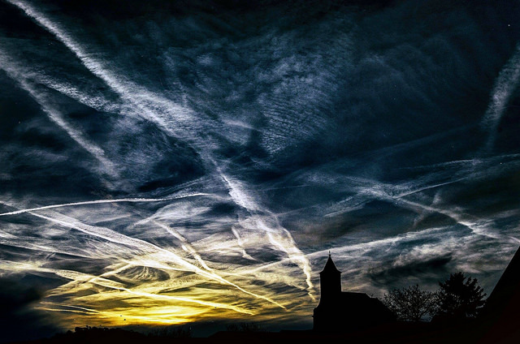

Ister Platzi
React Native / React
Fecha: 25/01/2019
Puedes verlo en :: www.platzi.com/native
La programación es un proceso que se utiliza para idear y ordenar las acciones que se realizarán en el marco de un proyecto;al anuncio de las partes que componen un acto o espectáculo; a la preparación de máquinas para que cumplan con una cierta tarea en un momento determinado. 